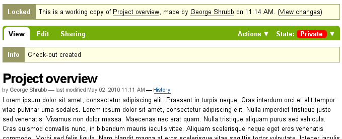

Plone 4 User Manual
A User Manual for Plone content creators and managers.
1. Introduction
A Conceptual Overview of Plone
1.1. Conceptual Overview
An explanation of Plone as a content management system
What is Plone?
Plone is a content management system (CMS) which you can use to build a web site. With Plone, ordinary people can contribute content to a web site without the help of a computer geek. Plone runs over the Web, too, so you donât need to install any special software on your computer. The word content is meant to be general, because you can publish so many types of information, including:

A Plone web site contains various kinds of content, including text, photos, and images. These can exist in many forms: documents, news items, events, videos, audio files, any types of file and data that can be uploaded or created on a web site. Content can also be uploaded from your local computer. You create folders on a Plone web site to hold content and to create a navigation structure:

You Love Butterflies
For example, to add content about butterflies, you might add a folder named "Butterflies," then add some text to a web page in the folder:

And then you might add some butterfly photos to the folder:

You can add many types of content to a folder, including sub-folders. After adding a few reports and videos to the Butterflies folder, the content would be organized like this, with two sub-folders within the Butterflies folder:

What Goes on Behind the Scenes
You may wonder how it all works. A typical Plone web site exists as an installation of Plone software on a web server. The web server may be anywhere, often at a website server company within a "rack" of computers dedicated to the task:

The diagram shows the many cables that connect individual server computers to the Internet, across fast network connections. Your Plone site is just software and database storage software installed on one of the individual server computers. As you type or click on your computer, data is sent up and down the networking cables and communication channels of the Internet to interact with your Plone software installation on the server.
Let's simplify the diagram showing how you interact with Plone:

You use your web browser -- Firefox, Safari, Internet Explorer, etc. -- to view and edit your Plone web site, and the changes are stored by the Plone software into its database storage system.
For example, imagine your butterfly Plone web site is located at mysite.com. You type www.mysite.com into your web browser. After you press Enter, the following sequence of events happens as your browser talks to the web server at mysite.com:

The Plone software responds:

Plone reads its database to look for information stored in mysite.com. It then sends back the web page to your computer, in a code called HTML. HTML is a computer language that describes how a web page looks. It includes text, graphics, fonts, the color of the background, and just about everything else. There are many online resources that can teach you HTML details, but one of Ploneâs advantages is that you donât need to know (much) about HTML. Thatâs one reason for Plone and other similar web software; to let you focus on your content, e.g., butterfly text and graphics, instead of learning a new computer language.
But back to our overview. Your web browser "renders" (translates) this HTML, and you see the resulting web page:

As you view your butterfly web page, you can choose to change it or add to it. You can also upload photos, documents, etc. at any time:

After you make your edits and click "save changes," the new version of the web page will be immediately available to anyone surfing to your site:

1.2. Visual Design of Plone Web Sites
Plone allows web site administrators and designers the ability to create unique site designs. Here's an overview of the Plone layout, and some design examples.
What does a Plone web site look like? For years there has been a consistent design for the default Plone appearance. The default design looks generally like this:

The Plone web site you use could have a design radically different from this, but you should be able to find common elements, such as the log in link and a navigation panel or menu. In the default design, the navigation menu is in the left area, and usually appears as an indented list of folders in the site. There also may be a set of tabs in the Log In, Location Information strip near the top.
We can distinguish between the design of a web site and the functionality of a web site. For getting work done, focus on the functionality and don't worry so much about the appearance and layout of the web site. A strength of the Plone content management system is that a web site can be radically redesigned for a new look, without affecting the underlying content and functionality. The navigation menu can be moved from the left to the right, but it works the same. The right area can be deleted where functionality normally put there isn't needed. The areas for left, main, and right, as depicted above and below, could be changed to top, middle, and bottom, but it would still be a Plone web site underneath.
We'll use the default Plone layout design as an example of typical divisions of the screen:

You may need to adapt these terms as needed for your Plone web site design. You may encounter varied terms for describing screen real estate, such as right and left "slots," for the left and right column areas, "portlet," or "viewlet," for discrete areas or boxes, and several other terms.
For example, we can select three web sites from the list of Plone web sites to compare:

This is the web site for Akamai, a leading provider of online web tools and acceleration technology. The header area has simple text menu choices for five main content areas arrayed horizontally at the bottom of the header area. At right, the header contains another horizontal menu and a search box. The bottom of the header area would contain log in information, for use by the maintainers of the web site. The main graphic at top left is a focus area for eye-catching graphics and current topics. There is a main area at left center where the main text is located. The right column holds a series of "portlets." The footer contains a horizontal menu, repeating the menu choices in the header, for convenience. There is a right-most column that has zoom settings.

This is the web site for Discover Magazine. The header area contains a large horizontal menu, the "main menu," if you will, a smaller horizontal menu at upper right, and a search box. This site is rich with textual "portlets" that cover so many topic areas, which are divided into three columnar areas, left, middle, and right. The top of the middle column contains a focus area with a video. There are large interactive boxes in several places. The footer contains basic site identification information and a link to "about us." For a large web site like Discover's, maintainers of the site log in to custom editing screens, and there is much automation of data feeds -- Plone uses Zope, a sophisticated storage system, and Python, a great programming language, which facilitates intelligent "wiring" of the flow of text and graphics into the web site.

The last of the three sites to examine is the web site for Penn State University's Smeal College of Business. The header contains a logo, a horizontal menu for main topic areas, and a search box at right. There is a main menu for this site at left, which is more traditional for a Plone web site. A large graphical area contains a rolling focus animation. There is another small graphical focus in the left column. Three textual columns round out the design, above the basic identification footer. Maintainers of this web site enter by means of a custom log in page, with the log in and user information showing along the bottom of the topmost header area.
So, what does a Plone web site look like? Traditionally, the out-of-the-box look is like that shown at the top of this page, with header, menu, columns, and a footer. These three sites illustrate how designers typically combine focus areas, vertical and horizontal menus, "portlets," and textual content, usually arrayed in several columns. The underlying machinery is Plone and Zope and Python, but the design "theme" or "skin" can be made to look any way the designer chooses.
1.3. Plone User Accounts and Roles
The basics of using a Plone web site account, the distinction between anonymous surfing and "logged in" web site work, and the description of user roles.
Plone web sites come in many flavors, ranging from personal websites with one user to community, organization, or business websites that could have hundreds of users. Each person who adds content to a Plone web site has their own user account. A user account includes a user name and a password. Some Plone sites allow people to sign up by visiting the site, clicking a Join link, and filling out basic user information. Other sites have user accounts that are created by web site administrators, in which case people normally receive emails with the user account details.
However created, a Plone user account allows a person to log in by typing their user name and password. Passwords are case-sensitive, which means that you have to pay attention to the uppercase and lowercase letters. For example, if your password is xcFGt6v, you would have to type that exactly for it to work. Passwords that have a variety of characters in them are preferred over passwords like "raccoon" or "boardwalk," as they are more difficult to guess and therefore more secure.
Anonymous vs Authenticated Web Surfing
The distinction between anonymous web surfing and authenticated (logged-in) web activity is an important one:
Anonymous Web Surfing
This is the normal experience for a person surfing the web. You type the web address of a web site into your browser and you look at web pages, watch videos, view images, but you don't have to log in. This is why this mode is called anonymous: anyone can do it just by surfing normally. Note the presence of the log in link the screen image below (top right). If there is a log in link showing, you haven't logged in -- and you are surfing the web site anonymously, as seen in the following screen capture of a new Plone web site:

Authenticated (Logged-in) Web Activity
You know the authenticated mode of web experience if you have ever used a bank or credit card website, or any other website that involved a user account. A bank web site will let you view your account information, fill out information forms, transfer funds, and do other actions, but only after you have logged in. A Plone web site is not much different, except that you can do more sophisticated things. Compare the screen image below, captured after a user called "John Smith" has logged in. Near the top right you see links for John Smith's name and a log out link. There is another important difference you see after logging in -- the main area in the middle now has a green header strip with tabs. This sort of header strip is present when a user has rights to change an area of the website. John Smith has the user rights to change this main area. The tabs in the green header strip for the main area will vary somewhat, but you can count on it looking like a tabbed interface with this particular green color. In the following screen capture, user John Smith has logged into a new Plone web site:

User Roles
Equally important is the distinction between different user roles on a Plone web site. To illustrate the simplest case, let's consider two user roles, one called member and the other called manager. Consider the different rights or "power" of these two roles:
Member
- has a user account, so can log in
- can add content, but
only in specific areas, and can't change anything outside of this area;
often users are given a "home area," to treat as personal space where
they can add content.
- can not publish content so that it is
visible to the anonymous web surfer, even content which they added; a
person with manager role must approve content for publishing
Manager
- has a user account, so can log in
- can add content anywhere and has the power to change anything
- can publish any content
When you get your new account on a Plone web site, you should be given information indicating where you have the right to add content, after you have logged in. After logging in, if you go to a folder where you have rights, you'll see a header strip that has a green color with tabs for contents, view, edit, rules, and sharing:

You'll be able to explore to find the differences between these tabs, but here are descriptions to help you start:
- Contents - shows a list of items in a folder
- View - shows the view an anonymous web surfer would see
- Edit - shows a panel for changing a view
- Rules - shows a panel for controlling how an item is created and managed
- Sharing - shows a panel for setting rights of other users to see or edit content
You also see menus in the lower part of the green header strip, Display, Add new..., and State:

Explore these also. Here are basic descriptions of these menus:
- Display - shows menu choices for setting the display type (list view, summary view, etc.)
- Add new... - shows menu choices for adding content items (images, pages, folders, etc.)
- State - shows menu choices for setting publication state (private, public draft, public, etc.)
These menus and tabs will offer the main ways you interact with Plone. You will become very familiar with them as you learn more about managing a Plone-powered website.
1.4. Logging In
What to expect when you log in to a Plone site
When you visit a Plone web site anonymously, or are given the web address for site maintenance, you'll see a log in button in the top-right corner like this:

After clicking the log in link, you'll see an input panel where you can type in your user name and password:

After logging in to a Plone web site you will see some indication of your name, often the top in the top-right corner of the screen. You can click on your name to perform some actions related to your user, covered in the following sections.
From Plone 4 on, you (or the site administrator) can allow users to use their email address as login name. This feature can be switched on in the Security settings control panel. The effect is that on the registration form no field is shown for the user name. On the login form the user is now asked to fill in an email address. See E-mail address based login in the Upgrade Guide for more info about this feature.
1.5. Setting Your Preferences
After logging in to a Plone web site, you can change your personal preferences for information about your identity and choice of web site settings.
After logging in, your full name will be posted on the top-right corner of the screen. Click your name to open the dropdown, then click on the Dashboard link to go to your personal area:

You will see the dashboard panel:

When you log in for the first time, your dashboard will be empty, as the Info message explains. Portlets are specific "views" of different types of content. You can choose which ones you want in your dashboard by clicking the Edit tab, but we'll get to that in a second.
First, let's look at the Preferences link in the previous dropdown, which will bring up the personal preferences edit panel:

Date entry fields include:
- Full Name - If your name is common, include your middle initial or middle name.
- E-mail address
- REQUIRED - You may receive emails from the web site system, or from a
message board, if installed, etc. When an item is required, a little
red square will show alongside the item.
- Location text box - This is the name of your city, town, state, province, or whatever you wish to provide.
- Language preference selection menu - Plone excels at offering multilingual support.
- Biography text box - Enter a short description of yourself here, about a paragraph or so in length.
- Home page
web address - If you have your own web site or an area at a
photo-sharing web site, for instance, enter the web address here, if
you wish, so people can find out more about you.
- Content editor selection menu - You have the choice of using TinyMCE or Kupu, which lets you edit web pages with a nice graphical interface, or using a basic editing panel, which is good if you are accustomed to writing web pages using HTML (the basic "code" of web pages). The default setting for new sites is to use TinyMCE, and is assumed in this user manual.
- Enable external editing
checkbox - This is for switching on and off an "external" editor, if
one has been installed by the web site administrator. Use of an
"external" editor is mainly for web designers and
programmers who do more editing of actual code, but it could be useful
for volume page creation using specialized text mark-up languages.
(Don't worry about this setting if you haven't heard anything about it
from your web site administrator).
- Portrait
photograph upload - The portrait photograph will appear as a small
image or thumbnail-size image, so it is best to use a head shot or
upper-torso shot for this.
You can change your preferences whenever you wish.
1.6. Your Dashboard
A Plone user has a personal "dashboard" for customizing the personal user interface.
Plone has several built-in "views" of news, events, recently changed items, and such. These list views are held in discrete rectangular areas called portlets. Think of a portlet as a window view of a given type of content. For example, the news portlet offers a view of recently published news items.
You control which portlets you view in your dashboard, and where they are placed. The following screen capture shows what user Elizabeth Smith would see after logging in and clicking her own name at upper right to go to her personal area:

The dashboard appears to be empty for a new user.
Clicking the edit tab for the dashboard will show that there are portlets already assigned to the dashboard -- the dashboard view shown above is empty, because there is no content available for display in the portlets on this new web site. Here are the default portlets:

You see the News and Events portlets in the left-most column, the Recent Items portlet in the second column, and the Review List portlet in the right column. The third column does not have a portlet assigned.
A new user account on a basic Plone web site will have a dashboard like the one shown, but for a web site that has been customized with add-on functionality, there may be more portlets to choose from, and the dashboard might start out with several more placed in the columns. For example, there could be portlets for "current weather," "stock ticker," "quote of the day," etc., depending on what is installed for the web site (such things would require custom software). Depending on what is installed for the site, the user can customize the portlets they want to see and where to place them within the four columns.
So, for the typical Plone user account, the dashboard would start with the portlets shown above, and later would be "populated" as news items, events, and other content items are added to the web site.
2. Adding Content
How to add basic content types to Plone web sites
2.1. Adding New Content
A general overview of how to add new content items in Plone, including definitions of each standard content type
New content items are adding via the Add New . . . drop-down menu:

Adding content in Plone is done placefully, which is to say that you must navigate to the section of your Plone website that you wish the new content to reside before you use the Add New . . . drop-down menu. You can of course cut, copy, and paste content items from one section to another if necessary.
Content Types
In Plone, you can use a number of Content Types to post certain kinds of content. For example, to upload an image you must use the Image content type. Below is a list of the available content types in order of their appearance, and what each are used for:
- Collection
- Collections are used to group and display content based on a set of criteria which you can set. Collections work much like a query does in a database.
- Event
- An
Event is a special page-like content type specifically for posting
information about an event (such as a fundraiser, barbecue, etc).
This content type has a function which allows the site visitor to add
the event to their desktop calendar with either the iCal or vCal
standard. This includes applications such as: Google Calendar, Outlook,
Sunbird and others.
To add a single event to your calendar, click on the vCal or iCal links next to the "Add event to calendar" text in the main view of the event item.
From Plone 3.3 on you can also get all the events in a folder in one go (currently only available in iCal format). To download the iCal file, append @@ics_view to the end of the URL of the folder that contains the events. For example, if you want to get all the events into the events folder in the root of your site, go to http://yourdomain.tld/events/@@ics_view. There are plans to provide a link to this iCal calendar inside the UI in a future release.
- File
- A File in Plone is any binary file you
wish to upload with the intent that it can be downloaded by your site
visitors. Common examples are PDFs, Word Documents, and spreadsheets.
- Folder
- Folders
work in Plone much like they do on your computer. You can use folders
to organize your content, and to give your Plone website a navigation
structure.
- Image
- The Image content type is used
for uploading image files (JPG, GIF, PNG) so that you can insert them
into pages or other page-like content types.
- Link
- Also
referred to as the 'Link Object'; do not confuse this with the links
you create via TinyMCE or Kupu, Plone's visual page editors. The Link
content type is often used to include a link to an external website in
Navigation and other specialized uses.
- News Item
- This
content type is similar to Event, only News Item is specifically for
posting news. You can also attach a thumbnail image to a News Item,
which then appears in folder summary views next to the summary of the
News Item.
- Page
- A Page in Plone is one of the
most simple content types available. Use Pages to write the bulk of
your web pages on your Plone website.
Note: Depending on what add-on products you have installed, you may see more options in your Add New . . . drop-down menu than appear here. For information about those additional content types, refer to the Product documentation for the add-on in question.
Title
Nearly all content types in Plone have two fields in common: Title and Description.
The Title of content items, including folders, images, pages, etc., can be anything you want -- you can use any keyboard characters, including blanks. Titles become part of web address for each item you create in Plone. Web addresses, also known as URLs, are what you type in a web browser to go to a specific location in a web site (Or, you would click your way there), such as:
www.mysite.com/about/personnel/sally/bio
or
www.mysite.com/images/butterflies/skippers/long-tailed-skippers
Web addresses do have restrictions on allowed keyboard characters, and blanks are not allowed. Plone does a good job of keeping web addresses correct by using near-equivalents of the Title that you provide, by converting them to lowercase, and by substituting dashes for spaces and other punctuation.
The web address of a given item is referred to as the short name in Plone. When you use the Rename function, you'll see the short name along with the title.
The fields will vary according to the content type. For instance, the Link content type has the URL field. The File content type has the File field, and so on.
Description
The Description appears at the top of pages, just under the Title. Descriptions are often used to conjunction with a variety of Folder and Collection views (such as Standard and Summary). The Description also appears in search results via Plone's native search engine.
2.2. Adding Folders
Adding folders to a Plone web site is the basic way of controlling the organization of content.
You have undoubtedly created folders (directories) on your computer's hard drive. Personal computers use a hierarchy of folders to structure and organize the programs and files on the hard drive. In Plone folders are essentially used the same way, except that they are created on a Plone web site, for organizing content in Plone's built-in storage system.
Folders are added by clicking the Add new... drop-down menu. Select Folder from the menu:

You should now see the Add Folder screen:

Fill in the Title, which is required, as indicated by the red square. The Description is optional; you can always come back to the edit panel if you need to add a description of the folder. Descriptions are useful when a site visitor uses the search tool included with Plone - results will display with both the Title and Description of the item.
You also notice tabs along the top:
- Default, for entering the Title and Description fields,
- Categorization, for specifying categories that apply to the folder (you may know these as keywords),
- Dates, for setting the time period when the folder should be available for view on the web site,
- Ownership, for specifying the creator and/or contributors for the content item,
- Settings, for allowing comments about the item and whether it shows in the navigation menu for the web site.
These tabs are standard, so you'll see them when you click other content types. We will cover these tabs in another section of this user manual.
Be sure to click Save at the bottom of the page when you are finished. This will complete the folder creation process.
 Watch a Plone 4 video on adding a folder.
Watch a Plone 4 video on adding a folder.
2.3. What's in a Web Name?
Individual content items on a Plone web site have discrete web addresses. Plone creates these automatically, based on the Title that you supply.
What's in a Web Name?
The Title of content items, including folders, images, pages, etc., can be anything you want -- you can use any keyboard characters, including blanks. Titles become part of web address for each item you create in Plone. Web addresses, also known as URLs, are what you type in a web browser to go to a specific location in a web site (Or, you would click your way there), such as:
www.mysite.com/about/personnel/sally/bio
OR
www.mysite.com/images/butterflies/skippers/long-tailed-skippers
Web addresses do have restrictions on allowed keyboard characters, and blanks are not allowed. Plone does a good job of keeping web addresses correct by using near-equivalents of the Title that you provide, by converting them to lowercase, and by substituting dashes for spaces and other punctuation.
To illustrate, let's take each of these two web addresses and split them out into their component parts:
www.mysite.com/about/personnel/sally/bio
^
website name
^
a folder named About
^
a folder named Personnel
^
a folder named Sally
^
a folder named Bio
In this example, Plone changed each folder title to lowercase, e.g., from Personnel to personnel. You don't have to worry about this. Plone handles the web addressing; you just type in titles however you want.
And, for the second example:
www.mysite.com/images/butterflies/skippers/long-tailed-skippers
^
website name
^
a folder named Images
^
a folder named Butterflies
^
a folder named Skippers
^
a folder named Long-Tailed Skippers
This example is similar to the first, illustrating how there is a lowercase conversion from the title of each folder to the corresponding part of the web address. Note the case of the folder named Long-tailed Skippers. Plone kept the dash, as that is allowed in both title and part of the web address, but it changed the blank between the words Tailed and Skippers to a dash, in the web address, along with the lowercase conversion.
The web address of a given item is referred to
as the short name in Plone. When you use the Rename function, you'll see the short name along with the title.
2.4. Adding Images
Adding images to a Plone web site is a basic task that may involve a little work on your local computer, but is essential, because photographs, maps, and custom graphics are so important on web sites.
Remember to use web-standard file formats
for all images. Acceptable formats include: JPG, JPEG, GIF, and PNG. Do
not use BMP or TIFF formats as these are not widely supported by web
browsers.
When you are ready to upload an image, use the Add new... drop-down menu (You will only see the Add new... menu after logging in):

After clicking to add an Image, you'll see the Add Image panel:

The Title and Description fields (field, as in "data input field") are there, as with adding a Folder, and at the bottom there is a place to upload an image. Let's look at the three input fields individually:
- Title - Use whatever text you want, even with blanks and punctuation (Plone handles web addressing).
- Description - Always a good idea, but always optional. Leave it blank if you want.
- Image - The Image field is a text entry box along with a Browse... button. You don't have to type anything here; just click the Browse button and you'll be able to browse you local computer for the image file to upload (Remember: You need to remember where you keep your images on your computer).
For images, at a minimum, you will browse your local computer for the image file, then click Save at the bottom to upload the image to the Plone web site. You'll have to wait a few seconds for the upload to complete (or a minute or so, if you have a slow Web connection). A preview of the uploaded image will be shown when the upload has finished.
As of Plone 4, images and files that are uploaded into Plone have their IDs (URLs) based on the title that is given to the image (instead of the file name of the image or file). Since the title field is not required, if you do not fill it out, the name of the item will default to using the name of the file in place of the title.
2.5. Adding Pages
Pages in Plone vary greatly, but are single "web pages," of one sort or another.
To add a page, use the Add new... menu for a folder:

Select Page from the drop-down menu, and you'll see the Add Page panel:

The Title and Description fields are there at the top. Fill each of them out appropriately. There is a Change note field at the bottom, also a standard input that is very useful for storing helpful memos describing changes to a document as you make them. This is useful for pages on which you may be collaborating with others.
The middle panel, Body Text, is where the action is for pages. The software used for making Pages in Plone, generically called visual editor and specifically a tool called TinyMCE, is a most important feature allowing you to do WYSIWYG editing. WYSIWYG editing -- What You See Is What You Get -- describes how word processing software works. When you make a change, such as setting a word to bold, you see the bold text immediately.
People are naturally comfortable with the WYSIWYG approach of typical word processors. We will describe later in this manual. Your site-administrator may also enable so-called markup languages for your site.
2.6. Adding Files
Files of various types can be uploaded to Plone web sites.
Choose file in the Add new... menu for a folder to upload a file:
You will see the Add File panel:

Click the Browse button to navigate to the file you want to upload from your local computer. Provide a title (you can use the same file name used on your local computer if you want). Provide a description if you want. When you click the save button the file will be uploaded to the folder.
Watch a Plone 2 video on adding a file.
Example file types include PDF files, Word documents, database files, zip files... -- well, practically anything. Files on a Plone web site are treated as just files and will show up in contents lists for folders, but there won't be any special display of them. They will appear by name in lists and will be available for download if clicked.
There are specialized add-on tools for Plone web sites that search contents of files. If you are interested in this functionality, ask your Plone web site administrator.
2.7. Adding Links
In addition to links embedding within pages, Links can be created as discrete content items. Having links as discrete items lets you do things like organizing them in folders, setting keywords on them to facilitate grouping in lists and search results, or include them in navigation.
Add a link by clicking the menu choice in the Add new... menu for a folder:
You will see the Add Link panel:

Good titles for links are important, because the titles will show up in lists of links, and because there tend to be quite a number of links held in a folder as a set.
Paste the web address in the URL field or type it in. There is no
preview feature here, so it is best to paste the web address from a
browser window where you are viewing the target for the link to be sure
you have the address correct.
The Link Object in Use
A link object will behave in the following ways, depending on your login status, or permissions.
- If you have the ability to edit the link object, when you click on the link object you'll be taken to the object itself so that you can edit it (otherwise you'd be taken to the link's target and could never get to the edit tab!)
- If you don't have the ability to edit the link object,
when you click on the link object you'll be taken to the target of the
link object. Likewise, if you enter the web address of the link object
directly in your browser, you'll be taken directly to the link's
target. The link object in this case acts as a redirect.
2.8. Adding Events
Plone web sites have a built-in system for managing and showing calendar events.
Use the Add new... menu for a folder to add an event:

From the top, we have the following fields:
- Title - REQUIRED
- Description
- Event location
- Start date and time - REQUIRED
- End date and time - REQUIRED
- Event body text (visual editor panel)
- Attendees
- Event type(s)
- Event URL
- Contact Name
- Contact Email
- Contact Phone
- Change note
One part of the panel needs a bit more explanation: the event start and end times. The year, month, day, and other fields are simple pull-down menus. But for the day, often you can't remember exactly and you need to consult a calendar. There is a handy pop-up calendar that offers an alternate way to select the day. If you click one of the little calendar icons adjacent to the day pull-down, :


IMPORTANT: It will not show on the main web site calendar until it has been published.
Watch a Plone 2 video on adding an event.
2.9. Adding News Items
Plone web sites have a built-in system for publishing news items.
Use the Add new... menu for a folder to add a news item:
You will see the Add News Item panel:

The standard fields for title, description, and change note are in the panel, along with a visual editor area for body text and image and image caption fields. You can be as creative as you want in the body text area, and you can use the insert image (upload image) function to add as much illustration as needed. The images you upload for the news item will be added to the folder in which you are adding the news item.
The Image and Image Caption fields are for adding an image to be used as a representative graphic for the news item, for posting in news item listings. The image will be automatically resized and positioned. Use the Body Text to insert an image in the actual body of the News Item.
IMPORTANT: News items will not appear in the main web site news listing or news portlet until they are published.
Watch a Plone video on adding a news item.
2.10. Setting Basic Properties
The tab panels available on each content item has fields for basic information. Providing such data is important, providing fuel for the engines that run Plone.
Any content item, when clicked by a user with edit rights for the item, will show a set of tabs at the top for setting basic properties:

These basic properties tabs are:
- Default - shows the main data entry panel for the content item
- Categorization - shows a panel for creating and setting categories (keywords) for the item
- Dates - shows the publishing date and expiration date for the item
- Ownership - shows a panel for setting creators, contributors, and any copyright information for the item
- Settings - shows a small panel for setting whether or not the item will appear in navigation menus and if comments are allowed on the item
The input fields under these tabs cover basic descriptive information called metadata. Metadata is sometimes called "data about data." Plone can use this metadata in a multitude of ways.
Here is the Categorization panel, shown for a page content item (would be the same for other content types):

Â
Note: Tags were formerly called Categories in Plone 3, and Keywords prior to version 3.0.
The main input field for the panel is for specifying categories. Create them anew, just by typing in words or phrases, one per line, in the New tags box. When you save, the new tags will be created within the system of tags for the web site, and this content item will be filed under them. If you re-edit this item, or edit any other, the new tags will show up as Existing tags.
The Related Items field lets you set links between content items, which will show as links at the bottom, when a content item is viewed. This is useful when you don't want to use explicit categories to connect content.
The Location field is a geographic location, suitable for use with mapping systems, but appropriate to enter, for general record keeping.
The Language choice normally would be allowed to fall to the site default, but on multilingual web sites, different languages could be used in a mix of content.
The Dates panel has fields for the publishing date and the expiration date, effectively start and stop dates for the content if you wish to set them:


Recommendations
There is no requirement to enter the information specified through these panels, but it is a good idea to do so. For the Ownership panel, providing the data is important for situations where there are several people involved in content creation, especially if there are multiple creators and contributors working in groups. You don't always need fields such as publishing and expiration dates, language, and copyrights, but these data should be specified when appropriate. A content management system can only be as good as the data completeness allows.
Specifying categories requires attention, but if you are able to get in the habit, and are zealously committed to creating a meaningful set of categories, there is a big return on the investment. The return happens through the use of searching and other facilities in Plone that work off the categorization. The same holds for setting related items. You'll be able to put your finger on what you need, and you may be able to discover and use relationships within the content.
Exposing Metadata Properties as meta tags in the HTML source
From Plone 4 on, in Site Setup â Site, there is a
check box that will expose the Dublin Core metadata properties.
Checking this box will expose the title, description, etc. metadata as
meta tags within the HTMLÂ <head>.
For example:
<meta content="short description" name="DC.description" /> <meta content="short description" name="description" /> <meta content="text/html" name="DC.format" /> <meta content="Page" name="DC.type" /> <meta content="admin" name="DC.creator" /> <meta content="2009-11-27 17:04:03" name="DC.date.modified" /> <meta content="2009-11-27 17:04:02" name="DC.date.created" /> <meta content="en" name="DC.language" />a
The generator will check and obey the allowAnonymousViewAbout setting and affects the propertiesCreator, Contributors and Publisher.
You can read more about Dublin Core and HTML Metatags.
2.11. Restricting Types in a Folder
The Add new... menu has a choice for restricting the content types that can be added to the folder.
Restricting types available for adding to a folder is the simplest way to control content creation on a Plone web site. You may want to restrict content types if your site is going to be worked on by several people. In this way you can enforce good practices such as putting just images in the images folder.
First, select the last choice in the Add new... menu called Restrictions...:

There are three choices shown for restricting types in the folder:

The default choice, to use the setting of the parent folder. Having this as the default means that if you create a folder and restrict the types that can be added, any subfolders created in the folder will automatically carry the restrictions. The second choice, to allow the standard types to be added, is a way to reset to the default, unrestricted setting. The last choice allows selection from a list of available types:

Types listed under the Allowed types heading are those available on the web site. The default, as shown, is to allow all types. Allowed types may be toggled on and off for the folder.
Use of Secondary types allows a kind of more detailed control. For example, if it is preferred to store images in one folder, instead of scattering them in different folders on the web site -- a scheme that some people prefer -- an "Images" folder could be created with the allowed type set to the Image content type only. Likewise an "Company Events" folder could be created to hold only the Event content type. If left this way, content creators would be forced (or a single web site owner) to follow this strict scheme. Perhaps some flexibility is desired for images, though. By checking the Image content type under the Secondary types heading for the "Company Events" folder, images could be added if really needed, by using the More... submenu, which would appear when this mechanism is in place.
Some people prefer a heterogeneous mix of content across the web site, with no restrictions. Others prefer a more regimented approach, restricting types in one organizational scheme or another. Plone has the flexibility to accommodate a range of designs.
2.12. Preparing Images for the Web
Preparing images for the web is an essential part of using images in Plone, or in any online context. As you will see, size matters.
Many people source photographs taken with a digital camera, but they can also be scanned images, graphical illustrations made with software, and other specialized images. Let's take a look at the case of a butterfly photo taken with a digital camera.
Digital photographs taken with modern cameras are usually too big to post directly on a website, so they need to be resized. A typical web site design may have a width of around 1000 pixels. When a photograph comes off your camera, it may be several thousand pixels wide and tall, and several megabytes in file size. You need to use software on your computer to resize the image to something less than 1000 x 1000 pixels, often much smaller than that.
The software you use to view or print your digital photos will often have this resizing functionality, or you may have graphics software such as Corel Draw, Adobe Photoshop, Irfanview, or Gimp on your computer. Resizing an image, sometimes called resampling, is a standard function you should be able to find in your software, often under the Image menu.
How do you know what width, in pixels, to resize your image? It depends. For a little "head shot" photograph to go in a biography, maybe 200 pixels wide is just right. For a group photograph, 200 pixels would be too small to allow identification of the people in the photograph, so it may need to be closer to 400 pixels wide. For a scanned map image, perhaps the image width would need to be 1000 pixels for the map detail to be usable.
After saving your resized image, give it a name that indicates the new size (e.g., butteryfly-resized-300px.jpg). The file format is most commonly .jpg (or .jpeg). Other common formats for images include .png and .gif. Take note of where you save images on your computer so that you can find them when you upload them to your Plone web site.

To summarize:
- Take your photograph with your camera, or find an existing image you want to use
- Transfer it to your computer
- Use image software on your computer to resize your photograph
- Upload it to your Plone website
2.13. Adding collections
Collections (formerly called Smart Folders) are virtual containers of lists of items found by doing a specialized search.
See the later section of the manual Using Collections.
3. Managing Content
The contents tab is the place where content items can be copied, cut, pasted, moved, renamed, etc.
3.1. Cutting, Copying and Pasting Items
Cut, copy, and paste operations involve moving one or more items from one folder to another.
Cut/Paste
Moving items from one area to another on a website is a common task. Often this need arises with placement of content in the wrong folder. For example, if the author of the following content about Skipper butterflies realizes that a Swallowtail butterfly was mistakenly included -- the Eastern Tiger Swallowtail folder shown below -- the folder can simply be moved with a cut/paste operation:

Note that the Eastern Tiger Swallowtail folder has been checked, and that the cut button is about to be clicked. After clicking the cut button, the screen will show a new paste button. The Eastern Tiger Swallowtail folder and all of its contents are now in the web site's "memory." The Eastern Tiger Swallowtail folder does not immediately disappear, however, awaiting the actual paste operation. The paste button is now highlighted to show the cut/paste operation is in progress:

The paste button is now active. The next step is to navigate to the destination folder, in this case the Swallowtails folder:

After clicking the Swallowtails folder, the paste button will continue to show, because the paste operation has not yet been completed:

And last, clicking the paste button for the destination folder adds the Eastern Tiger Swallowtail folder to its proper place in the Swallowtails folder, and cuts it from the original location, the Skippers folder, and the cut/paste operation is complete:

The paste button remains active, because you would be allowed to continue pasting the folder in other places if you wanted. This could happen in several situations, including when you need to copy one page, for example, as a kind of template or basis document, into several folders.
Copy/Paste
A copy/paste operation is identical to the cut/paste operation, except that there is no removal of content from the original folder. It works as you would expect it to work.
 Watch a Plone 2 video about performing these operations.
Watch a Plone 2 video about performing these operations.
.
3.2. Editing Content
Editing Plone content works the same as adding content -- usually the data entry and configuration panels for the content are the same for editing as for adding.
Of course, when we edit an item of content, the item already exists. Click the Edit tab for an item and you will see the data entry panel for the item, along with the existing values of the item's data.
For an example of something really simple, where editing looks the same as adding, we can review how to edit a folder.
The Edit panel for a folder simply shows the title and description input areas. Often a description is not provided for a folder, so the only thing changed is the title. If you do wish to give a description, which is a good idea for distinguishing folders in a list, the description can be text only -- there is no opportunity for setting styling of text, such as bold, italics, or other formatting. This keeps the descriptions of Plone content items as simple as possible.
Here is the Edit panel for a folder, in this case, one called "Butterflies":

That's it. Change what you want and save, and the content item will be updated in Plone's storage system. You can repeatedly edit content items, just as you can repeatedly edit files on your local computer. By now you have appreciated that Plone stores discrete content items as separate entities, akin to "files" on a local computer, but you really don't have to think about it that way. Plone is a content management system, where the content comes in the form of numerous discrete content items that may be individually edited. Edit away at your heart's content.
For an example of editing a content item that is a bit different than adding in the first place, we can examine editing an image. Editing an Image can be done by navigating to an individual image and clicking the Edit tab. Clicking the Edit tab for the image, you will see the following Edit Image panel:

Here, an image called "Eastern Tiger Swallowtail Butterfly" is being edited. You can change the title and description, as usual, in which case you would usually keep the setting to "Keep existing image." You can also change the image itself by checking the "Replace with new image" choice. Or, clicking the "Delete current image" choice will simply delete the image entirely.
Notice also the Transform tab at the top, which pertains specifically to images, offering a choice of several image transforms:

So, editing an image is a bit different than adding one in the first place, but not by much.
Editing panels for other content items are also usually just like the panels for adding.
Inline Editing (optional)
Inline editing is disabled by default in the latest versions of Plone (3.3+). It can be enabled through the control panel by a Site Manager (Site Setup -> Site -> Enable Inline Editing checkbox).
The normal procedure to edit a content item is to click the Edit tab and use the discrete input fields for the item. For text fields, such as Title, Description, Body Text, etc., there is a quicker way to edit called inline editing. Inline editing is used when viewing the content item (the View tab is active).
As the mouse passes over editable text parts of the item, a subtle box will outline the editable text. In the following screen capture, the mouse cursor is not over editable text, so you see the page title and body text as normal:

But when the mouse is moved over the body text, a box highlights the body text as editable:

Clicking within the body text after the inline editing box has appeared will bring up the visual editor:

Change or add text and save, and the normal view is back. This is considerably quicker -- fewer clicks and less intervening wait time -- than clicking the Edit tab and bringing up the entire edit panel for the page.
If the mouse is moved over the title, also editable, an inline editing box appears:

Clicking the title after the box appears will activate a very simple editing field with a Save/Cancel choice:

Change the title and save. The speed benefit of inline editing is really sensed for editing something as simple as a title.
3.3. Folder View
Folders have the Display tab which controls the several ways of showing folder contents.
For most content items, if you want to change how it looks, you edit the content directly. But folders are a different animal. As containers of other items, folders can display their contents in a variety of ways. We'll cover each of the options in this section.
Consider a scenario where a butterfly enthusiast, John Smith, has logged in to his web site to work on the part devoted to Skipper butterflies. He navigates to the "Skippers" folder by clicking the top tabs of the web site, or the navigation menu, which is on the left in his default Plone web site design. When he clicks the "Skippers" folder, the standard view tab panel, or just "standard view," for the folder is shown:

The View is always how a content item would show for anonymous web site visitors. Click the View tab when you want to see what a content item looks like after you have changed something. For folders, you will see a listing of contained content items, in one of several list presentations, selected via the display pull-down menu. The default view is called standard view:

And, here is summary view:

And, tabular view:

And, thumbnail view, which is mainly useful for photographs, but still works for normal content:

Making a photo album is easy. Just add the photographs (images, or image files, the most common being .jpg files) to a folder and set the display view for the folder to thumbnail view. Thumbnail view will automatically update the display as images are added to the folder, presenting a multi-page division into sets of images, as needed, as the number of images grows.
If you are uploading photographic images from a digital camera or scanner, you will most likely want to resize them on your local computer before uploading them, because they are too large.
Setting an Individual Content Item as the View for a Folder
The basic list view functionality described above for folders fits the normal way we think of folders -- as containers of items -- but Plone adds a nice facility to set the view of a folder to be that of any single item contained within the folder. This takes advantage of the way the navigation system dynamically reflects the folder structure of a Plone web site as folders are created.
You can set the display view for a folder to show a single page, which can be useful for showing the most recent document within a list of documents stored in the folder. Or, you can set it to a collection, which on its own is already a powerful content filter. The display view setting should be used with care, because it changes the behavior of folders, from acting as simple containers to acting as direct links to content. Instead, you can often accomplish what you want by only using collections, which will be covered later in this manual.
Watch a Plone 2 video about setting the page display view.
Next, we move to the Contents tab to see important functions for accessing content in a list of folder content.
3.4. Folder Contents
The Contents tab shows a list of items in a folder. It is the place for simple item-by-item actions and for the manipulative actions of copy, cut, paste, move, reorder, etc.
The Contents tab for folders is like "File Manager" or "My Computer" system utilities in Windows and Linux desktops and the "Finder" in Mac OS X, with similar functionality.
Clicking the Contents tab for a folder, such as the "Skippers" folder below, shows the Contents tab panel:

The Contents tab panel is immediately recognized by observing the check boxes beside the items in the contents list. Click these check boxes to select multiple items for performing copy, cut, rename, delete, or change state operations.
Plone has a clipboard for copy and cut operations. If you check one or more items, and click cut or copy, a paste button will be added to the row of buttons along the bottom of the panel. If you then click another folder, you'll be able to paste the items there. For a cut operation, the items will remain in the source folder -- they won't disappear -- until they are pasted somewhere.
Renaming items will show a panel for entering a new name for the short name (or id) of the item, as well as the title. The distinction between short name and title is one that becomes apparent only when you rename, because Plone automatically creates the short name from the title in most Plone web sites. But the renaming operation must show you the short name as well as the title, because usually would want to change both, if changing either. Consider the following example:

If you were to change the title to "Long-tailed Skippers," you would also change the short name to "long-tailed-skippers." This keeps things tidy -- it keeps them correct, so that the URL for the item, the web address, is kept up-to-date with the actual content item. Note that the short name should contain no blanks. Use dashes for any blanks in the title, and otherwise make it a carbon copy of the title. Also, use lowercase for the short name. See also the page "What's in a Web Name?" for a description of how Plone handles web addressing and the short name. The following video also includes in illustration of renaming:
Watch a Plone 2 video that includes renaming an item.
The delete operation is straightforward. Click to select one or more items, and then the delete button, and the items will be deleted.
The change state operation offers a great way to change the publication state of a selection of folders, and their subfolders if you select this option. In the following example, the publication state for a folder called "Long-tailed Skippers" is being modified. Checking the "Include Folder Items" will make the state change affect all contained content. Don't forget that you can do this to, say, three folders at a time, and all of their subfolders and contained content, so that in one fell swoop you can quickly publish, unpublish, etc.
Shift-clicking to select a range of items works. This could be very handy for a folder with more than a dozen items or so, and would be indispensable for folders with hundreds of items.
In addition to these individual action operations, reordering is a natural mouse-driven manipulation, as described in the next section.
3.5. Reordering Items
The contents tab contains functionality for quick and precise reordering of items in a folder.
Consider the following folder, called "Skippers," for holding information about this type of butterfly. Often, when we add content items, we don't initially get them in the order we want. The desired ordering is not always alphabetical, but in this example we can assume so. Below you see the Skipper butterfly subfolders are not in alphabetical order:

To move the top item named "Spread-winged Skippers" to the bottom of the list, one would click within the Order column on the left (containing the "double-colon" symbols) and drag the row to the desired position:

Dragging and dropping is done by holding the mouse button down as you move the item. The item that is being moved turns yellow as it is being moved:

When the mouse button is released, the item stays where it was dropped:

3.6. Previous - Next Links
Automatic previous-next links for content items in a folder can be enabled under the Settings tab for a folder.
The Settings tab is found by clicking the Edit tab for the folder. There is a toggle for enabling previous-next links for items contained in the folder:

Once enabled, as content items are added to the folder, previous and next links will automatically appear as needed:

Three pages have been created within the Cloudywings folder, and
"Page Two" (which has no text, for this example) has been clicked. At
the bottom of "Page Two" are links for "Previous: Page One" and "Next:
Page Three."
This is a really useful feature!
3.7. Deleting Items
Items may be deleted from a folder with ease.
Sometimes it is necessary to delete a content item, often to replace it with an updated version. Or, you could simply delete an item, for a variety of reasons. In the example of the swallowtail butterfly mistakenly added to the Skippers folder, instead of cutting it and pasting it somewhere, it could simply be deleted:

In the example shown above, the Eastern Tiger Swallowtail folder is will be deleted after clicking on the Delete button.
Entire folders may be deleted, so care must be taken with the delete operation, but this is true for computer use in general, and we all have learned to do a last minute self-check to make sure the delete operation is intended.
3.8. Automatic Locking and Unlocking
Plone gives you a locking message that will tell you that a document was locked, by whom, and how long ago — so you won't accidentally stomp on somebody else's changes.
When
somebody clicks on the Edit tab, that item immediately becomes locked.
This feature prevents two people from editing the same document at the
same time, or accidentally saving edits over another users edits. In
this example, George Schrubb has started editing the "Widget
Installation" document. When Jane Smythe (who has permissions to edit
that document as well) goes to view it, she will see the following:

Once George has finished editing the document and clicks the Save button, the document is automatically unlocked and available to be edited by others (should they have the proper permissions to do so, of course).
However, if it becomes clear to Jane that George isn't really editing the document anymore (e.g. the locking message says that the item was locked several days ago and not just a few minutes ago) then Jane can "unlock" it and make it available for editing again.
In Plone 3.3 or higher:
If a user leaves the edit page without clicking Save or Cancel, the
content locking will remain effective for the next ten minutes after
which time, the locked content item becomes automatically unlocked.
This timeout feature is important for browsers that do not execute the
"on-unload" javascript action properly such as Safari.
Should you desire to disable locking, go to the Plone control panel (Site Setup -> Site) and uncheck Enable locking for through-the-web edits.
3.9. Versioning
An overview on how to view the version history of an item, compare versions, preview previous versions and revert to previous versions.
Creating a new version
Plone includes a versioning feature. By default, the following content types have versioning enabled:
- Pages
- News Items
- Events
- Links
Note that all other content types do track workflow history.
Content items can be configured to have versioning enabled/disabled through the Site Setup â Plone Configuration panel under "Types".
When editing an item, you may use the change note field at the bottom; the change note will be stored in the item's version history. If the change note is left blank, Plone includes a default note: "Initial Revision".
A new version is created every time the item is saved. Versioning keeps track of all kinds of edits: content, metadata, settings, etc.
Viewing the version history
Once an item as been saved, you can use the History link found near the top of the page. Simply click it to show the History overlay:

The most recent version is listed first. The History viewlet provides the following information:
- The type of edit (content or workflow)
- Which user made the edit
- What date and time the edit occurred
Comparing versions
From the History viewlet you can compare any previous version with the current version or any other version with the version just before it.
To compare any previous version with the one just before it, click the Compare link located between two adjacent versions in the History overlay.

By clicking this button, you'll see a screen like this one where you can see the differences between the two versions:

In this example, text in red is text which has been deleted and text in green is text which has been added to the newer version. You can toggle between inline or as code views of the differences between versions.

You may also compare any previous version to the current version by clicking the Compare to current link History overlay, found to the far right of each version listed.
Viewing and reverting to previous versions
You can preview any previous version of a document by clicking the View link to the right of any version listed.
To revert back to a previous version, click on the Revert to this revision button to the right of any version listed.
3.10. Presentation Mode
Plone comes with the ability to create very simple slideshow presentations.
Presentation Mode is a special feature of the Page content type. You can enable Presentation Mode by editing the page, then going to the Settings tab. Notice the Presentation Mode checkbox available there. Once checked, a link will appear in the view of the page for a user to view the page in Presentation Mode.
How to Create Slides
All the content for a presentation lives on a single page. You do not need to create a page for each slide. A slide is created when you use the Heading (h1) class on the page - they effectively indicate to Plone where you want your slides to be.
You can have as many slides as you want in your presentation. Just add more Heading (h1) tags to your page and the content between that h1 tag and the next h1 tag becomes the content of your slide.
How to Format a Slide
It is very important to note that the Normal Paragraph style will not render any content in the slide. Slides are meant to display summary information, not chunks of paragraph text. As such, you must class all content in each slide with a style other than Normal Paragraph. Examples of those styles include:
- Heading (h1)
- Subheading (h3)
- Definition list
- Bulleted list
- Numbered list
- Literal
- Pull-quote
- Call out
- Highlight
3.11. Working Copy
Working Copy lets you have two versions of your content in parallel.
When a Plone site is first created, there a number of additional
features that can be enabled, including "Working Copy". If the Plone
site you are using doesn't show the "Check out" option under the
Actions menu, you will need to contact your site manager and request
that "Working Copy Support (Iterate)" be installed.
Overview
You might have been in a situation like this before: you have published a document, and you need to update it extensively, but you want the old version to exist on the web site until you have published the new one. You also want the new document to replace the current one, but you'd like to keep the history of the old one, just in case. Working copy makes all this possible.
Essentially, you "check out" a version of the currently published document, which creates a "working copy" of the document. You then edit the working copy (for as long as you like) and when you're ready for the new version to go live, you "check in" your working copy, and it's live. Behind the scenes, Plone will replace the original document with the new one in the exact same location and web address â and archive the old version as part of the document's version history.
Using "Check out"
First, navigate to the page you want check out. Then from the "Actions" drop-down menu, select "Check out":

An info message will appear indicating you're now working with a working copy:

Now you're free to edit your own local copy of a published document. During this time, the original document is "locked" -- that is, no one else can edit that published version while you have a working copy checked out. This will prevent other changes from being made to (and subsequently lost from) the published version while you edit your copy.

Using "Check in"
When you are ready to have your edited copy replace the published one, simply choose "Check-in" from the "Actions" drop-down menu:

You will then be prompted to enter a Check-in message. Fill it out and click on "Check in":

Your updated document will now replace the published copy and become the new published copy.

You will also notice that there is no longer a copy of the document in the user's personal folder.
Note that it is not necessary (and in fact, it is not recommended) to use the "State" drop-down menu on a working copy. If you inadvertently do so, however, don't panic. Just go back to your working copy and use "Check in" from the "Actions" menu.
Canceling a "Check out"
If for any reason it becomes necessary to cancel a check out and you don't want to save any of your changes, simply navigate to the working copy and select "Cancel check-out":

You will prompted to confirm the "Cancel checkout" or to "Keep checkout":

Note that if the user who has checked out a working copy is not available to check in or cancel a check out, users with the Manager role may navigate to the working copy and perform either the check in or cancel check out actions. That's because not all contributors have the Check in privilege. If that option is missing from your Actions menu:
- Use the State menu.
- Submit for publication.
- Ask a reviewer to not change the state.
- Ask the reviewer to perform the check in on your behalf instead.
The check in routine will handle the state.
4. Using TinyMCE as visual editor
An user manual for creators
4.1. Introduction
Introduction to TinyMCE.
TinyMCE is a platform independent web based Javascript HTML WYSIWYG editor. What this means is that it will let you create html content on your web site. TinyMCE supports a lot of Operating Systems and browsers. Some examples are: Mozilla, Internet Explorer, Firefox, Opera, Safari and Chrome. TinyMCE has a large userbase and an active development community.
TinyMCE is the default visual editor starting from Plone 4.0, although Kupu is also available for users who prefer it. TinyMCE was decided to be shipped as default because Kupu wasn't being well-maintained, whereas TinyMCE had a much broader use in other communities, as well as a better plugin story and some other usability niceties as adding both internal and external links via the same button.
4.2. Basics
Basic options of TinyMCE.
The default TinyMCE editor will look like this:

On top you can see the toolbar, below the text area and at the bottom a resize bar. If you drag the lower right corner you can make the editor window bigger or smaller.
Toolbar
The following table describes the function and output of each button.
| icon | function | description | example |
|---|---|---|---|
 | save | Saves changes | |
 | text style | Normal paragraph | text |
| Heading |
text | ||
| Subheading |
text | ||
| Literal |
text | ||
| Discreet |
text | ||
| Pull-quote | Pull-quote | ||
| Call-out | |||
| Clear floats | |||
| Highlight | |||
| (remove style) | |||
| Page break (print only) | |||
 | bold | Bolds selected text | test |
 | italic | Italicizes selected text | text |
 | justify left | Aligns the selected text to the left | text |
 | justify center | Aligns the selected text to the center of the screen | text |
 | justify right | Aligns the selected text to the right | text |
 | justify full | Aligns the selected text to both left and right | text |
 | bulleted list | Creates a bulleted list |
|
 | numbered list | Creates a numbered list |
|
 | oudent | Moves an indented section of text one tab to the left | |
 | indent | Indents the selected text by one tab | |
 | insert table | Inserts a table | |
 | row properties | Table row properties | |
 | cell properties | Table cell properties | |
 | insert row before | Inserts a row before the current row | |
 | insert row after | Inserts a row after the current row | |
 | delete row | Deletes the current row | |
 | insert column before | Inserts a column before the current column | |
 | insert column after | Inserts a column after the current column | |
 | delete column | Deletes the current column | |
 | split cells | Splits the current cell | |
 | merge cells | Merge the current cell with other cells | |
 | insert link | Inserts or edits a link | text |
 | unlink | Removes the current link | text |
 | insert anchor | Inserts or edits an anchor | |
 | insert image | Inserts or edits an image | |
 | html | Edit the HTML source code | |
 | fullscreen | Toggles fullscreen mode |
4.3. Inserting Images
A description of the options available for inserting images with TinyMCE.
The TinyMCE editor allows you to insert image files stored in Plone into your document, using the button on the TinyMCE toolbar:

Clicking this button launches the Insert Image dialog:

The three columns of the dialog display:
- In the first column - a folder navigation list.
- In the second column - an object navigation list, from which you can select your image file.
- In the third column - image preview, and options for alignment, size and captions.
In the example above, an image of a rose was selected - rose.png (rather large one, at its original size of 600*450 pixels).
According to the "Image alignment" option you choose, the image will be placed in your page (and the following HTML code will be generated):
- lefthand (<img class="image-left captioned" src="rose.png" alt="rose" />);
- righthand (<img class="image-right captioned" src="rose.png" alt="rose" />);
- inline (<img class="image-inline captioned" src="rose.png" alt="rose" />).
You may also choose the size of the image you need. This is especially convenient when you deal with large images, as there is no need to use Photoshop or other external image editing application to crop or change the size of an image. The "Image size" dropdown list provides a choice between many sizes and formats:

- Large (<img src="rose.png/image_large" alt="rose" />);
- Preview (<img src="rose.png/image_preview" alt="rose" />);
- Mini (<img src="rose.png/image_mini" alt="rose" />) - the minimum-size image is formed;
- Thumb (<img src="rose.png/image_thumb" alt="rose" />) - a thumb(inch)-size icon is made out of your image (little bigger than 2,5cm);
- Tile (<img src="rose.png/image_tile" alt="rose" />) - a tile is made out of your image;
- Icon (<img src="rose.png/image_icon" alt="rose" />) - an icon is made out of your image;
- Listing (<img src="rose.png/image_listing" alt="rose" />) - a listing icon is made out of your image;
Image Captioning
It is possible to put image caption under the image in TinyMCE. Caption is taken from image description. Alt text is taken from image title. Alt text and caption update if image is updated.
To enable image captioning go to Site Setup â TinyMCE. Make sure that you have Allow captioned images selected in the Resource Types tab.

When you add image to the site, you can put some text into its description that will be displayed as an image caption.

Now when we create a page, and insert image into it, check the box Caption:

Save this page, and you will see the image followed by its description as the caption all inserted into a frame:

4.4. Inserting Links
Inserting internal, external and anchor links.
Internal Links
Select a word or phrase, click the Insert/edit link icon, and the Insert/edit link panel will appear:

You use this panel by clicking on Home or Current folder to begin navigating the Plone web site to find a folder, page, or image to which you wish to make a link. In the example above, a page named "Long-tailed Skippers" has been chosen for the link. After this panel is closed, a link to the "Long-tailed Skippers" page will be set for the word or phrase selected for the link.
External Links
Select a word or phrase, click the Insert/edit link icon, select External under Libraries, and the External link panel will appear:

Type the web address of the external web site in the box after http://. When you press return or leave the field a preview will appear to check the address. If you paste in the web address, make sure you don't have duplicate http:// at the beginning of the address. Then click ok. The external link will be set to the word or phrase you selected.
Anchors
Anchors are like position markers within a document, based on headings, subheadings, or another style set within the document. As an example, for a page called "Eastern Tiger Swallowtail," with subheadings entitled "Description," "Habitat," "Behavior," "Conservation Status," and "Literature," an easy set of links to these subheadings (to the positions within the document at those subheadings) can be created using anchors.
First, create the document with the subheadings set within it, and re-type the subheadings at the top of the document:

Now create the anchors for each subheading. To create each anchor move the cursor to the beginning of the subheading and press the Insert/edit anchor icon. Enter the name of the anchor in the Anchor name field. Then click ok.

Then select each of the re-typed subheadings at the top and click the Insert/edit link icon to select by subheadings:

When selecting Anchors under Libraries, a panel will appear for selecting which subheading to which the anchor link should connect:

The Link to anchor tab will appear. The right side of the panel shows the anchors that have been set within the document. Here the Description anchor is chosen for the link (for the word Description, typed at the top of the document).
You can be creative with this powerful feature, by weaving such links-to-anchors within narrative text, by setting anchors to other styles within the document, and coming up with clever mixes. This functionality is especially important for large documents.
4.5. Inserting Tables
Inserting, updating and deleting tables, columns, rows and cells.
Tables are handy for tabular data and lists. To add a table, put your cursor where you want it and click the Inserts a new table icon. You'll see the Insert/Modify table panel:

Setting rows and columns is straightforward. You can add a summary of the table in the Summary field if you like. Table class refers to how you want the table to be styled. You have choices such as these:

Here are examples of these table styles:
Subdued grid:

Invisible grid:

Fancy listing:

Fancy grid listing:

Fancy vertical listing:

After the table has been created you can click in a cell to show table resizing handles:

In the table above, the cursor has been placed in the "Special Leader" cell, which activates little square handles around the edges for resizing the entire table. It also activates the other table controls in the toolbar which, lets you edit properties of a row or a cell, lets you add and remove rows or columns and lets you split and merge cells.

5. Using Kupu as visual editor
Kupu is a platform independent web based Javascript HTML WYSIWYG editor. What this means is that it will let you create HTML content on your web site.
From Plone 4 on, TinyMCE is the default visual editor for new sites. However, Kupu is still available to use if you prefer so. Check the Setting Your Preferences section to learn how to set Kupu as your default editor.
A typical Kupu toolbar looks like this:

The text format is normally left with the HTML setting, but some sites offer structured text or other markup languages for editing pages.
The icons are:
- bold,
- italics,
- left align,
- center,
- right align,
- numbered list,
- bulleted list,
- dictionary list,
- tab left (block),
- tab right (block),
- image (the "tree" icon),
- internal link (the "chain link" icon; make a link to another page in the given site),
- external link (the "world" icon; make a link to a web page elsewhere),
- anchor (the "anchor" icon; make a link to a specific section of a web page),
- table (add a table with rows and columns),
- direct HTML editing (the "HTML" icon; if you know HTML, edit the HTML for the page directly), and a
- pulldown menu for text styling.
Images
Place your cursor within the text of a page, then click the "tree" icon. This panel will pop up:

Click "Current folder" in the left side of the panel, if it isn't already highlighted. The current folder is the folder that contains the page you are editing -- all pages are contained inside some folder. There are many ways to manage storage of images, including having one central images folder, but a common method is to store images that show on a page in the folder that contains the page (the current folder). In this method, pages and the images associated with them are stored together within the folder structure. If you click the Upload button, you will be prompted to select an image on your computer and upload it. After selecting an image to upload, the right panel will let you give the image a title for use on the web site, and several image placement and sizing options. Clicking OK will upload the image and place it on the page.
The same panel will appear if you click an image on page to select it, then click the same "tree" icon for editing the image options or for changing the image.
You are responsible for sizing and editing images on your computer before you upload them, but one easy way to handle images for use on most web pages is to make a copy of an image on your computer, then resize it to something like 1000 pixels in largest dimension. This is a reasonable size for uploading -- there is no need to upload your gargantuan images coming from your digital camera. Plone will automatically create several sizes of an uploaded image, including "large," "mini," and other sizes. You pick the size you want to use when your upload or edit the image with the "tree" icon. You can also override the image size choice by editing the HTML.
Internal Links
Select a word or phrase, click the internal link icon, and the insert link panel will appear:

You use this panel by clicking on Home or Current folder to begin navigating the Plone web site to find a folder, page, or image to which you wish to make a link. In the example above, a page named "Long-tailed Skippers" has been chosen for the link. After this panel is closed, a link to the "Long-tailed Skippers" page will be set for the word or phrase selected for the link.
External Links
Select a word or phrase, click the external link icon, and the External link panel will appear:

Type the web address of the external website in the box starting with http://. You can click preview if you need to check the address. If you paste in the web address, make sure you don't have duplicate http:// at the beginning of the address. Then click ok. The external link will be set to the word or phrase you selected.
Anchors
Anchors are like position markers within a document, based on headings, subheadings, or another style set within the document. As an example, for a page called "Eastern Tiger Swallowtail," with subheadings entitled "Description," "Habitat," "Behavior," "Conservation Status," and "Literature," an easy set of links to these subheadings (to the positions within the document at those subheadings) can be created using anchors.
First, create the document with the subheadings set within it, and re-type the subheadings at the top of the document:

Then select each of the re-typed subheadings at the top and click the anchor icon to select by subheadings:

A panel will appear for selecting which subheading to which the anchor link should connect:

The Link to anchor tab will appear. The left side shows a list of styles that could be set within the document. For this example, the subheadings are used for each section, which is the usual case, so subheadings has been selected. The right side of the panel shows the subheadings that have been set within the document. Here the Description subheading is chosen for the link (for the word Description, typed at the top of the document).
You can be creative with this powerful feature, by weaving such links-to-anchors within narrative text, by setting anchors to other styles within the document, and coming up with clever mixes. This functionality is especially important for large documents.
Tables
Tables are handy for tabular data and lists. To add a table, put your cursor where you want it and click the add table icon. You'll see the add table panel:

Setting rows and columns is straightforward. If you check the Create Headings box you'll have a place to type column headings for the table. Table class refers to how you want the table to be styled. You have choices such as these:

Here are examples of these table styles:
| Thoroughbred Champions | Quarter Horse Champions |
|---|---|
| Man O' War | First Down Dash |
| Secretariat | Dashing Folly |
| Citation | Special Leader |
| Kelso | Gold Coast Express |
| Count Fleet | Easy Jet |
listing:
| Thoroughbred Champions | Quarter Horse Champions |
|---|---|
| Man O' War | First Down Dash |
| Secretariat | Dashing Folly |
| Citation | Special Leader |
| Kelso | Gold Coast Express |
| Count Fleet | Easy Jet |

Text Styling
The text style setting is made with a pulldown menu. Here are the choices:
| Description | Example |
|---|---|
| Normal | text |
| Heading |
text |
| Subheading |
text |
| Literal |
text |
| Discreet | text |
| Pull-quote |
text
|
| Call-out |
text |
| Page break (print only) | |
| Clear floats (remove style) | |
| Highlight | text |
As with normal word-processing editing, select a word, phrase, or paragraph with your mouse, then choose one of the style choices from the pulldown menu and you will see the change immediately.
Saving
Click the Save button at the very bottom and your changes will be committed for the page.
-----------
Footnotes
Markup languages
If you are the sort of person who likes to enter text using so-called mark-up formats, you may switch off the visual editor under your personal preferences, which will replace Kupu with a simplified text entry panel. The mark-up formats available in Plone are:
Each of these works by the embedding of special formatting codes within text. For example, with structured text formatting, surrounding a word or phrase by double asterisks will make that word or phrase bold, as in **This text would be bold.** These mark-up formats are worth learning for speed of input if you do a lot of page creation, or if you are adept at such slightly more technical approaches to entering text. Some people prefer such formats not just for speed itself, but for fluidity of expression.
6. Collaboration and Workflow
Learn how to share and control access to your content by using the Sharing tab and the State menu.
6.1. Basic Publication States
The publication control system for Plone is very flexible, starting with basic settings for making an item private or public.
In the upper right corner of the edit panel for any content type -- folders, images, pages, etc., and any specialized content types -- there is a menu on the right for publication state. This state menu has settings for controlling publication state:

The header for the menu will show the current publication state for the content item, such as State: Private, as shown above. Private is the initial state when you create a content item -- an uploaded image, a page, a news item -- and in the private state, as the name indicates, the content item will generally not be available to visitors to the web site. The Publish menu choice will make the content item available on the web site to anonymous visitors. The Submit for publication menu choice is used on web sites where there are content editors who must approve items for publication, as discussed below.
Also, and this will be very important, certain content types, such as news items and events, will not appear on the website as you expect, until they are explicitly published.
Store this in your memory: Publication state is important!
Publication state can be changed only by users whose accounts have the necessary permissions. The menu choices in the state menu will reflect existing permissions settings. For example, in a big newspaper web site, a reporter could add pages for news articles, but the state menu will not show a Publish menu choice, only a Submit for publication menu choice. This is because a reporter must submit articles up the line to the editorial staff for approval before publication. If your account has the permissions, however, the Publish menu choice will appear and you can simply publish in one step.
For an editor, a content item that has been submitted may be published or rejected, either outright, because it is an inappropriate submission for the situation, or for the more typical reason that the content item needs revision.
After a content item has been published, it may be retracted, to change the state back to public draft state, or sent back to private, if desired. The menu choices in the state menu will change accordingly:

Consideration should be given to retracting ("unpublishing"), or setting to private, any content that has become obsolete or undesired for some reason. Setting to private will take the item from public view and from showing up in search results, but will keep it around in case the format or the actual material (text, images, etc.) is needed later. This is especially true for content relating to events that may recur or to one-of-a-kind creations. The decision to delete or to set to private may depend on whether or not the content exists elsewhere, on a local computer. If the content is large in size, in the sense of disk space taken, perhaps saving to a local computer is warranted before deletion, if space on the website server computer is an issue.
6.2. Advanced Control
The publication control system, under the advanced menu, has sophisticated features for setting availability by date and by context.
The state menu has an advanced... item:

which brings up the advanced state panel:

Below an explanation section at the beginning of the panel, there is a check box showing the content that will be affected by this change of publication state. It shows that the folder "Long-tailed Skipper" will be affected by this state change.
The next field, Include contained items, is a check box for controlling whether the state change affects this item only (the "Long-tailed Skipper" folder) or the items it contains and all of any subfolders and other contained items. This is an important check box. It lets you easily change the availability of an entire section of a website. For example, the "Long-tailed Skipper" folder could contain four subfolders, for photographs, species occurrence descriptions, taxonomic history, and behavior descriptions, all of which has been kept private during the initial work to build up this content. All of it could be immediately made public -- it could be published -- by checking this box and checking Publish at the bottom before saving. Likewise, the Submit for publication choice would be used on a web site where editors controlled ultimate publication.
Likewise, an entire section could be immediately made private. For example, if an automobile rental agency decided to remove a car model from its fleet, an entire section of their website devoted to this car model, with several subfolders full of pages, images, and files, could be set to private.
The next two date fields are for effective date and expiration date. Their meanings are straightforward. If there is a window of time, for which a content item or a set of content items is valid for publication, it may be set with these fields.
A comment lets you attach an explanation to all content affected by the state change. This is especially useful when several people are working on a website, and a person less familiar with an area of the web site looks at content and wonders why it isn't published. They wonder, "This information looks good. Why isn't it published already?" Then they read a comment that says something like, "Don't publish until Richard checks on copyright issues regarding the items described here." Using comments is a good idea for sensitive information, even if you are the only person working on the web site, because you might forget why you made a decision about publication state.
Finally, at the bottom there is a choice of several available states for this action. It will vary, depending on the present state of the item. For example, if the item is currently in a published state, there won't be a choice for publish, if the item is presently in a private state, there won't be a choice for make private, etc. If an item is published already, there will be choices in this bottom part of the panel for reject and retract, for "unpublishing" at item, setting it back to public draft or then to private state.
 Watch a Plone 2 video about controlling publication state.
Watch a Plone 2 video about controlling publication state.
6.3. Workflow Policies
Workflow policies allow a site administrator to create a formalized system for controlling publication and content management as a step-by-step flow involving different users in set roles.
Workflow is an advanced subject. It involves creation of a more regimented control of content creation, review, and publication. If you have a user account on a typical small Plone site, you will probably not encounter custom workflow policies, because there isn't a need for this more sophisticated control. But, the potential is there for using this functionality, as it is built in to Plone.
For an introduction to the workflow concept, consider an example
involving a web site for a newspaper business, for which these
different groups of people are at work:
- Reporters
- Can create stories, but can only submit them for review.
- Editors
- Can review stories, but can't publish completely. They send positively reviewed and edited stories up the line for further approval.
- Copy Editors
- Do final fact checking, fixes, and review, and may publish stories.
A workflow policy, sometimes abbreviated to workflow, describes the constraints on state-changing actions for different groups of people. Once the workflow policy has been created, it needs to be applied to an area of the website for the rules to take affect. In the example of the newspaper web site, a workflow policy would be set up and then applied to the folders where reporters do the work of adding news articles. Then, reporters would create stories and send them up the line for review and approval:

Reporters would add news articles and would submit them (the publish menu choice is not available to them). Likewise, editors may reject the article for revision or they may, in turn, submit the article up the line to a copy editor for final proofreading and publication. In this newspaper business example, this policy could be called something like "Editorial Review Policy." Configuring a workflow policy is a matter of applying it to an area of the website -- to define the scope of the workflow. This is a web site administrator task. The web site administrator would use control panels of Plone to specify where on the web site the "Editorial Review Policy" applies, site-wide or to a subsection.
Plone comes with several useful workflow policies -- the default one is a simple web publishing policy. Your web site administrator might employ a more specific policy, such as a policy for a community-based web site or a company Intranet (internal web system). If so, you may need to learn some procedural steps to publishing, but these are just elaborations of principles in the default, basic workflow policy.
6.4. Collaboration through Sharing
The Sharing tab empowers you collaborate with other users through the use of several built-in roles.
Example 1: Letting others add content to a folder you created
In this example, Jane Smythe has full access to her Plone site. She
can add, edit, delete and publish content anywhere in the site. For
now, she has created a folder called "Documentation" and added one Page
to it, "Project Overview". She hasn't published either the folder or
the document. The default workflow for this Plone site has not been
modified.
Now she wants to let her colleague, George Shrubb, add
content to the Documentation folder. He have permission to edit any of
the existing content, but she needs him to start adding content. Before
we follow along with Jane, let's take a peek at what George currently
sees when he logs in on this Plone site:

Notice that as of right now, George can't even view the Documentation folder, because Jane created it and it is still in the Private state. All the default permissions are currently in place and work as expected.
Jane gives George the permissions he needs to add content to the Documentation folder.
Jane navigates to the Documentation folder and clicks on the Sharing tab:

One of the first things to notice is that Jane already has all the permissions available for this Folder. These permissions were actually granted from higher up in the site as indicated by the green/check mark symbol.
Taking a closer look at the available permissions, they are:
- Can add - This means that when this permission is granted to a particular user (or group of users), that user can then add new content items. And since that user was also the creator of that content item, they will be able to edit it as they like.
- Can edit -
When this permission is granted on a folder, the user can not only edit
the Folder (its title and description) but can also edit any of the
items in the folder. Note, however, the user is not allowed to delete
any of the content. When this permission is granted on a Page, for
example, the user can only edit that Page and none of the other items
in the folder.
- Can view - When this permission is used on a folder or other item, the user can view the content but not make any changes.
- Can review - When this permission is granted, the user can publish items.
Note: these permissions will override the default workflow permissions! For example, if you grant a user "Can view" permission on a Page that is in the Private state, that user will be able to see that Page.
In this example, Jane will grant George "Can add" permission on the "Documentation" folder so that he can add content to the folder. First, she searches to find him by his name:

Jane can now add specific permissions for George in the "Documentation" folder. She is going to give him the "Can add" permission and then click on "Save":

And that's all there is to it! Let's see how George views the site now.
Note: George does NOT need to log out and log back in. Permissions are always current because they are checked every time a user accesses anything (e.g. clicks on a link) on a Plone site.
George clicks on the Home tab (for example) to refresh his view of the site and can now see the "Documentation" folder:

When George clicks on the "Documentation" tab, he notices that he can view all the content in the "Documentation" folder, and he now is able to add the available content types to the folder, as shown in the Add new... menu:

George wants to review what Jane has already created, so he clicks on the Project Overview link and sees:

While George can view the document, his limited permissions do not allow him to edit it or change its state. The only thing he can do beyond viewing the document is to make his own copy of it.
George adds a Page called "Widget Installation" and creates the content for that Page. When he's done he saves it:

Jane views the work George has done. She clicks on the "Documentation" tab and sees that George indeed has been busy. She clicks on "Widget Installation" page to take a closer look:

Notice that Jane has full access to the page that George created. She can edit it as well as cut/copy/paste it. Instead, she will wait until George submits the page for review before actually doing anything further with this page.
Example 2: Letting others edit content you created
Both Jane and George have been hard at work creating pages in the Documentation folder. Jane has published the Documentation folder and several pages:

Jane has decided that she wants to turn over all editing (but not publishing) control of the "Documentation" folder to George. So she returns to the "Documentation" folder and clicks on the Sharing tab:

From here she only needs to tick the "Can edit" check box and George will be able to edit all the content in the "Documentation" folder -- including the "Documentation" folder itself. When George next visits the folder and clicks on "Project Overview" (which is a Page that Jane created), this is what he sees:

So now George can edit any item in the "Documentation" folder regardless of who created it or when.
Meanwhile, Molly has joined George as a new team member. George helps Molly start updating the "Widget Installation" document. He goes to the sharing tab for "Widget Installation" and searches on Molly's Full Name (not username) and gives her the "Can edit" permissions on this document.

Now when Molly goes to the "Documentation" folder, she can see the two published items and the private item that she is now allowed to edit:

And, in fact, when she clicks on the "Widget Installation" document, she is able to edit it:

Notice, however, when she clicks on either of the two items she isn't allowed to edit, she doesn't have any additional access. She can view these two items because they are published and in the default Plone workflow (meaning that anyone can view them).

One final note on this example: if the "Documentation" folder was not in the published state OR Molly had not been given any other permissions (for example, "Can view" on the Documentation folder), then Molly would have needed the complete URL to reach the document she had been given access to edit. Permissions are very specific in Plone!
7. Using Collections
Collections take advantage of the intelligence of Plone.
7.1. Introduction to Collections
A Collection in Plone works much like a report or query does in a database. Use Collections to dynamically sort and display your content.
A Collection in Plone works much like a report or query does in a database. The idea is that you use a Collection to search your website based on a set of Criteria such as: content type (page, news item, image), the date it was published, or keywords contained in the title, description, or body.
Let's say you have a large catalog of photos and maps on your website. You can easily display them all at once by creating a hyperlink to the folder they're stored in. You could even create different links for subfolders if you've organized things that way. However, if your images and maps were spread out over the site in many folders this would quickly become cumbersome. Also, there is no way with normal folders to display different content, from different parts of your site based on things like:
- keywords in the title
- date of creation
- author
- type of content
The need for showing content in a variety of dynamic ways has given rise to Collections (formerly known as Smart Folders, or Rich Topic in older versions of Plone). Collections do not actually contain any content items themselves in the same way that a folder does. Instead it is the Criteria that you establish which determines what content appears on each Collection page.
Common applications for Collections are:
- News Archives
- Event Archives
- Photos Displayed by Date Range
- Content Displayed by Keyword
7.2. Adding Collections
Collections (formerly called Smart Folders) are virtual containers of lists of items found by doing a specialized search.
Learning to think about content being stored wherever it is stored, and about using custom collections to gather up different "views" of the content, is an important step to using Plone most effectively. It is an intelligent system.
To add a collection, use the Add new... menu, as for adding other content types:

You will see the Add Collection panel:

Below the title and description fields is a set of fields for specifying the format of search results returned by the search criterion for the new collection. The four fields in the panel above are in pairs. The top two fields let you limit the search results to a number of items that will be displayed. The bottom two fields let you control the order of the search result items.
Setting the search criterion
After setting the display configuration in the edit panel shown above, click the criteria tab to show the panel for setting search criteria:

The top area of the panel, Add New Search Criteria, lets you set a field and a matching criterion. The bottom area, Set Sort Order, is a simple selection for a field to sort on:

The criteria types for matching data in content items depend on which field is selected.
After saving the collection, the search criteria will be applied and the results shown when the collection is clicked. You can create any number of collections for such custom views. For the butterfly example described above, in addition to a date constraint to find recent items, the categories field could be used to match color to have a series of collections for "Blue Butterflies," "White Butterfles," etc.
Multiple criteria can be used for a collection. For example, a collection called "Butterflies Photographed in the Last Month," could be made by setting a criterion on Creation Date and on Item Type as Image. Such date-based collections are really effective to show up-to-date views of content that don't require any administrative hand-work -- once such a collection has been created, it will automatically stay up to date.
Note: A collection doesn't behave like a normal folder â you can't add content items via the add item menu, as you can for a normal folder.
7.3. Adjusting the Display Settings
Learn how display settings can change the look of your Collection page
While the main power of Collections lies in Criteria, the display settings can make a big difference in the way your Collection will appear. All three of the settings we will cover in this section can be found by clicking the Edit tab of a Collection.
Inherit Criteria
By selecting the Inherit Criteria option, the Collection will inherit the Criteria from a parent Collection. This is only useful when using Sub Collections. If this is checked, you can create another Collection that is more specific than the Parent while still retaining the basic criteria of the Parent. A simple example might be a Parent Collection for displaying all Events in a site, and a Sub Collection that also displays Events (by inheriting Criteria) but only those Events with a particular keyword.
Limit Search Results
We can use Limit Search Results to limit the number of results that are Collection will display per page.
This way if we have a Collection that is displaying News Items, we can
limit the results to five or ten, instead of having it show all News
Items on a single, large list.
Display as a Table
Display as a Table is simply another way to display the results of a Collection. Instead of having the Collection spit out the results in a list form, we can have it generate a table with the results, and set exactly what information about the results we want displayed. We customize the table by selecting the Table Columns from the left and clicking the right arrow button to move it over to the right. In the example above we chose to include the Title of the object, its Creator, and the Effective date. You can use any number of the columns, or all of them if you so choose.
When considering what to select, keep in mind that not all objects will have the information for every column available. For example, the Start Date and End Date only apply to Events. Therefore if you added these columns and your table included Pages as well as Events then the rows for the Pages would not have the Start and End Dates filled in. The other thing to consider is that the more columns you have showing the more crowded the table will become. The best rule of thumb is to only display what you absolutely need to display.
A few more notes on selecting columns: You can select more than one at a time by holding down the control key (Ctrl) while you click. If you want to remove a column, select it on the right and click on the left arrow button. Also you can add and remove columns by double clicking on their name.
7.4. Definition of Criteria
Definitions and examples of the different criteria fields available
The power of Collections most certainly lies with the Criteria fields. Mastering how to use the different Criteria will allow you to use Collections in several useful ways. In this section, we will use examples to illustrate the many ways of using Criteria.
Categories
The Category criterion allows you to search the Category field of objects. For this to work you must specify Categories for the content objects ahead of time (this is done through the Categorization tab on content objects). An example where you could use this is you want to create a Collection that would display all objects relating to the Category Organization. As you can see in the image below, we are able to select the value Organization for our criterion. Then, by saving this criterion and viewing our Collection, the results would be all content objects we had designated with the Category Organization.
Once again the values available to you are completely dependent on
what you have specified on your objects in the Categorization tab.
Creator
When using the Creator criterion, we are filtering objects based on who created them. This might be useful if you want to do a featured author section, where you would only want to display content on your site that has been created by a certain author.
As you can see we have several options for our criterion type. They allow us to restrict the creator to the person currently logged in, enter the name of another user as text, or to select users from a list.
If you want to display results from multiple users, you would need to use the List of Values option. Otherwise you would normally use the Text option unless the creator you wanted to select was yourself in which case you would use Restrict to Current User.
Description
The Description field is essentially a search box type criterion. However, instead of searching the title and body of a page, it will only search for the text in the Description field of a content object. This criterion is only really useful if you fill out the Description field consistently for all your content objects.
Location
Using the Location criterionis much like specifying a location when you search for a document on your hard drive. By specifying a Location criterion, the results that are displayed in your Collection will only come from that location, most commonly a Folder. This can be useful if you only want to display content that is in the About Us section of your site, for example. This is also useful for narrowing Collection results when combined with other criteria.
To specify a Location, simply click the Add button, which will pop up a new window showing you a directory of your site. If we follow our example and want to search the About Us section of our site, we would click the Insert button next to the About Us folder.
You can open folders to view content contained within them either by
clicking the Browse button or directly on the title of the folder you
want to open. You may also use the Search box to search for the Title
of an object.
Search Text
The Search Text is a very useful criterion. It is similar to the
search box on your site or an Internet search engine. It takes the text
you specify and searches the Title, Description, and Body of all
objects and returns any that have the word or phrase you specify.
This is useful when you want to find objects that have to deal with a
certain thing, especially if the word or phrase appears across many
content types. Using LearnPlone.Org as an example, if I want to create
a Collection that displays all objects that reference the word
Collections, I would use the Search Text criterion and specify collections. All Tutorials, Videos, Glossary items, etc with collections in the Title, Description, or Body would then appear in the Collection results.
Related To
The Related To field is another field, like Category, that must be specified on a content object prior to being used for a Collection. The Related To field on an object lets you specify which other objects in your site are similar or are relevant to the object you created. By specifying this field, when you create an object you can create a web of related content that will reference each other (think of a "see also" kind of function). When you have done this, you can use the Related To criterion in a Collection to display anything related to a specific object.
In this case we have specified that there are pages related to Our Staff, History, and the About Us Homepage. By selecting one or multiple values from this list, our Collection will display the pages that related to that Value.
If we selected History as the value we wanted, our Collection would show us everything that is related to the History page.
Keep in mind that the Related To Values list does not work based on
which objects are related to content but on which objects have another
object related to it. The Collection will display the results that are related to that value.
State
Using the State criterion is very simple. It allows us to sort by published or private state. It is a very good idea to restrict publicly viewable Collections to filter on published,
so that no private content appears in the Collection results. Filtering
on the Private state can be useful as well. For example, a site
administrator might want to quickly see private content, so that they
could determine what work needs to be done and what could deleted.
Dates
You may have noticed that there are several different dates available to use as Criteria. Since there are such a large number of dates, they will be covered on their own section of the manual.
7.5. Setting the Sort Order
Learn how to use the Sort Order feature to customize the order in which your results display
The Sort Order determines the order the results of the Collection will be displayed in. Sort Order allows you to sort by three main categories: text, object properties, and dates. When you sort by text, objects will be sorted in alphabetical order. When sorting by one of the object properties, we effectively are grouping objects together by the specified properties. When we sort by a date the results will be displayed with the most recent first (although there are many 'dates' in Plone). All Sort Orders are in Ascending Order unless the Reverse Order check box is selected. By checking this we can display in reverse order, or newest dates first, etc.
Dates
There are numerous Date options which will be explained in the next section of the manual.
Object Properties
Item Type
When sorting by Item Type, we end up with a Collection that has
results that are grouped by Item Type. We would want to use this if we
have a Collection that will return many different Item Types. This way
we can make the Collection very easy to browse for the site visitor.
State
Sorting by State will display results grouped by the publishing
state. Since there are only two States in the default configuration of
Plone, there will only be Published and Private items. We can use this
to separate all pages on our site and easily see what we have that is
public (Published) and what we are hiding from the public eye (Private).
Category
Category Sort Order is useful when we want to display the objects on
our site in a manner where they are grouped by the Category we placed
them in. Keep in mind, for sorting by Category to even be remotely
useful, you must have specified the Category on several objects. If you
have not specified any Categories, then sorting by Categories will do
nothing.
Related To
The Related To Sort Order will actually apply a criterion to your
Collection. It limits to the results to only those that have Related To
information Specified on their properties.
Text
Short Name
Sorting by the Short Name is the same as putting the result objects
in alphabetical order. By default Plone sets the Short Name of an
object to be the same as the Title. The difference between the two is
that the Short Name is all lower case and hyphenated between all words.
For example the Short Name for the page titled About Us would be about-us.
The Short Name is what Plone also uses in the URL for the page
(www.myplonesite.org/about-us). You can specify a different Short Name
for an object by using the Rename button on the Contents tab.
Creator
Sorting by the Creator will group all results in alphabetical order
by their author. For example, let's say we had several documents
published by Bob Baker and several of other documents published by Jane
Smith. Sorting by the creator would result in all the documents created
by Bob Baker listed first followed by those of Jane Smith.
Title
Sorting by Title will display the results in alphabetical order, by the object Titles.
Next we will cover the Dates that we skipped over in this section as well as the Criteria Field Section.
7.6. Using and Understanding Dates
Explanation of the Dates associated with Collections and their uses
There are several different types of dates we can choose from, many of them sounding similar.
Because of this it is very easy to get confused about which date to use. Below, each date option is defined.
Dates Defined
Creation Date
The Creation Date is the date the
document was made. You can think of this as its birthday, the day it
was born. You cannot change the Creation Date of an object.
Effective Date
The Effective Date is the date when an
object becomes published. This date is customizable through the Edit tab on objects
under the Date tab. However, there it is referred to as the Publishing Date (a minor discrepancy in Plone's nomenclature).
Creation Date and Effective Date
are very similar. They both are representative of the beginning point
of an object. A very important point to keep in mind when choosing
which one you want to use, is that an object can be created long before
it ever becomes public. You could have a page that is worked on for
several weeks before it is actually published. Thus you would get
different results in a Collection depending on which date you used.
We recommend using the Effective Date,
instead of Creation Date for date-oriented Collections. This way your
Collection shows results based on when they became viewable to the
public, which is more relevant to the audience of your Collection.
Also, you can go in and manually adjust the Effective Date to control
the sort order which is not something you can do with the Creation Date.
Expiration Date
The Expiration Date refers
to the day that the item will no longer become publicly
available. This date is also customizable through the Edit tab (shown
above) like the Effective Date. By default, objects have no Expiration
Date.
Modification Date
The Modification Date is
the date the object was last edited. Note that this date is first set
the day the object is created and will automatically change every time
the object is edited. There is no way to customize this date. You could
use this as a Sort Order along with an Item Type criterion set to Page,
to display all recently modified pages within the last week, for
example. The What's New listing on the homepage of LearnPlone.Org uses
Modification Date as its date criterion. That way both newly created
documents and ones that have been updated appear in the listing.
Event Specific Dates
The two following dates only apply to objects that are Events. These
two dates are very effective for creating Recent Events and Upcoming
Events Collections that will let your audience know what your
organization is doing and will be doing in the future.
Start Date
The Start Date is simply the date that an Event starts.
End Date
The End Date is simply the date that the Event ends.
Setting Dates
A confusing thing about dates can be how its Criteria are set up. They have a setup that is not like any of the other Criteria. First off, you have to choose whether you want a Relative Date or a Date Range.
The Relative Date allows you to construct a conditional statement. Such as: Items modified less than 5 days in the past. A Date Range will allow you to specify an exact range of dates, such as 01/02/08 to 02/02/08. The Date Range is useful when you want to create a Collection with a static date that won't change. The Relative Date can be very useful as it will allow you to create Collections that are automatically updating themselves, such as a Recent News Collections or an Upcoming Event Section.
Relative Date
Looking first at the Relative Date option, you can see we have three options to fill out.
The first option is Which Day. This allows us to select the number of days our criterion will include. One of the options is called Now. Using this will set the date range to the current day. The other two options do not matter and can be ignored when using Now.
The second option is In the Past or Future. This enables us to choose whether we are looking forward or backward into time.
The last option is More or Less. Here we can choose from three options. Less than allows us to include everything from now to a period of time equal to or less than the Which Day setting, either in the past or future. More than will include everything from beyond our specified number of days equal to or more than Which Day. Finally On the Day will only include things that are on the day we specified in the Which Day. Using the example in the image above if we had selected On the Day instead of Less than our Collection would display only objects that were modified (we are using the Modification Date criterion) 5 days ago.
If this is confusing to you, try reading it as a statement substituting in the field options you chose. "I want the results to include objects More or Less than Which Day, In the Past or Future". Our example in the image above would become "I want the results to include objects Less than 5 days in the past".
Date Range
The Date Range is much easier to understand. Both a Start Date and End Date are required (do not confuse these terms with the Event Specific dates!). The Date Range allows us to enter a beginning and an end date and the display everything within that time frame. Notice also that it allows us to specify a specific time of day as well.
8. Portlet Management
An introduction to the use and management of portlets.
8.1. Portlet Hierarchy
Portlets use a basic hierarchy approach which determines how and why they appear on each section of your site.
Portlets use a basic hierarchical approach. By default, the portlets that you assign at the root (homepage) of the site will propogate down to all the subsections of the site. If you want a different set of portlets or order of portlets for a particular sub-section, you must use the Block/unblock portlets controls, to "block" the parent portlets. When you block Portlets, you must explicitly add all the Portlets that you wish to see on the child page.
The portlet management screen has been updated in Plone 4 to show all portlets, including portlets that are blocked. Users can now see what's being blocked and what's being inherited. When a portlet is blocked, you will notice a subtle change in color on on the portlet management screen:

In this diagram, our Portlets are designated in blue underneath the Page title:

As you can see we have two Portlets designated on our Home page (navigation and recent items). These same Portlets appear on our About Page because of portlet hierarchy.
However, on the Documentation page we added a third portlet - the Collection Portlet. Here we are still allowing Parental Portlets, but in addition we specifically added the Collection Portlet.
On both the Tutorials and Videos Pages we have to block Parental Portlets because we do not want the Collection Portlet that is on the Documentation Page to show. When we block Parental Portlets we must re-add the Portlets to each Child page. In this case we re-added the Navigation Portlet to both and then added the Search Portlet to both.
Remember that the child pages only inherit from the parent page directly above them. In our example, if we added a page called Staff under About and allowed the parent portlets without adding any additional portlets, it would show the same Portlets as the Home Page as well as the About Page. However do not think that it is inheriting from the Home page. If we were to change the About Page and added a Search Portlet, our Staff Page would reflect the Portlets on the About Page not the Home Page.
8.2. Managing Portlets
How to add, remove, and rearrange portlets.
To begin manipulating portlets, you must find the Manage Portlets link, usually located on the bottom of each side column. Under Manage Portlets, you can create new Portlets, remove Portlets, rename and rearrange Portlets.

Clicking on this link will take us to a new page that will allow us to edit the Portlets. The other method of getting to this screen is by adding /@@manage-portlets to the end of the page URL that we want to edit the Portlets on. For example, to edit the Portlets on the About Us Page, the URL would end up being www.myplonesite.org/about/@@manage-portlets.

Adding a Portlet
Adding a Portlet is as simple as selecting the Add Portlet drop down box and clicking on the type of Portlet you would like to add. We will cover the different options available in the next section.
Editing an Existing Portlet
To edit the properties of an existing Portlet, simply click on the name of the Portlet. In the example to the left, if we wanted to edit the properties of the Navigation Portlet, we would Click on Navigation. Each type of Portlet will have different configuration options available to it.
Rearranging Portlets
To Rearrange your Portlets, simply click the blue up or down arrow. This will affect the order your Portlets are displayed on the page.
Removing Portlets
To remove a Portlet, click the red "X" associated with its name.
Hiding Portlets
From Plone 4 on you can show/hide portlets using the associated show/hide links present.
As you may have noticed on the Manage Portlet screen, you have the ability to work with Portlets on both the right and left side of the page. This is because there are two columns for Portlets to be in, a left column and a right column. Portlets will only appear on the side that you add them on.
With Portlets, you can add more than one of the same type on a page. There is no limit to how many times you can use an individual Portlet or a limit to how many total Portlets can be on a Page.
8.3. Portlet Types
Descriptions of each Portlet Type
There are several different types of Portlets to chose from. The way that Portlet types are named can be confusing at times. Also, some can be configured through Manage Portlets and others require some setup through the ZMI or by creating other content objects first. Below is a basic description of the use and functionality of each available Portlet type.
Navigation
The Navigation Portlet allows users to navigate your site with
ease by providing a structured "site map", or navigation tree. You have
the option to display the navigation for the overall site or choose to
only display the current folder contents. On LearnPlone.Org, you can
see an example of the Navigation Portlet in the left column. As you dig
deeper into the site, the tree will continue to expand. There are
several configuration options available that effect how the Navigation
Portlet will behave.
Calendar
The Calendar Portlet is a very simple Portlet that will display a Calendar on your site. This Portlet has no customizable options. If you have published Event content objects on your site, the days upon which they occur will be bolded in the calendar and will link to the corresponding events on your site.
Classic
A Classic Portlet is refers to the way portlets were used in older
version of Plone, prior to Plone 3. You must create a Page Template in
the ZMI and properly set the path and macro to enable the portlet. This
requires technical knowledege of both TALES and the ZMI.
Collection
The Collection Portlet will allow you to display the results of a Collection.
You must have a Collection previously created when you add this
Portlet, then you can specifying the Collection to be used . This is a
great way to summarize the results of an important Collection so that
it is easily viewable to the public. For instructions on creating a
Collection Portlet follow this How-to.
Events
The Events Portlet will display Upcoming Events,
provided that you have Events on your site. You can determine how many
events you want to be displayed and also which events you want to
display based on publishing state.
Log in
The Log in Portlet is another non configurable Portlet that will simply display a Log in Form
that will allow users with Log in information to log in to the site.
Once a user is logged into the site, this Portlet will not appear.
News
The News Portlet works exactly like the Events Portlet. However instead of displaying Events, it displays recent News items. Once again you can choose how many News items are displayed and filter them based on their state.
RSS Feeds
The RSS Feed Portlet allows you to link to an RSS Feed, choose how many items to display, and specify the refresh rate.
Recent Items
The Recent Items Portlet displays a customizable number of Recent Items, listed by Title. A Recent Item is determined by its Last Modified Date.
Review List
The Review List Portlet will display a list of objects that have been submitted for review.
If you are using a submit and review cycle (and have properly set
global roles for your users) this is a great way for reviewers to see
what content has been submitted for review. This Portlet only appears
to those logged in as this state is not viewable to the public.
Search
The Search Portlet will place a search box in your Portlet Column.
This search box will search the Titles, Descriptions, and Body text of
objects on your site for the text specified. You have the option of
enabling Live Search. Live Search is a feature which shows live results
if the browser supports JavaScript.
Static Text
The Static Text Portlet allows you to enter content just as you would on a normal Page object. This is useful for adding hyperlink to different sites or any information that will not change. An example of this Portlet is the "Still Stumped?" Portlet on the right hand side of this site. For more on Static Text Portlets and an example view the How-to Static Portlets.

{kind=link}
{kind=link}
{kind=link}